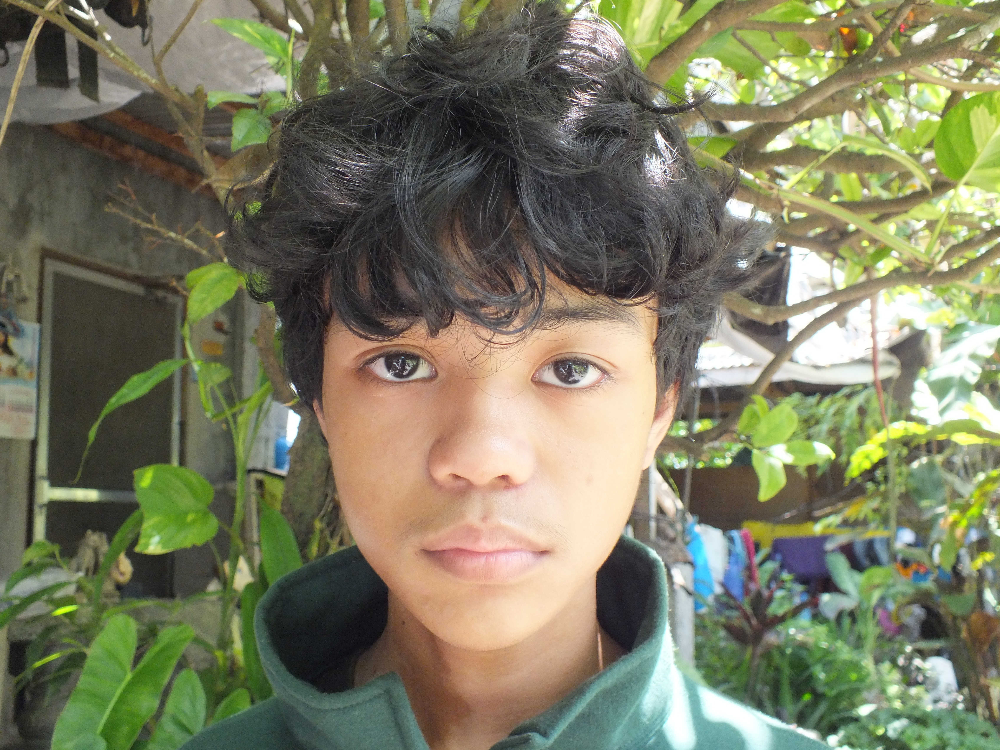

About Me
Get to know who I am as an artist.

Hello! I’m Mark Joshua Tupas
I am 18 years old born in july 19, 2007. I am a freelance artist and illustrator who specializes in character art,
digital illustration, and stylized visuals. I enjoy creating expressive, unique pieces that reflect personality and story.
My work focuses on identity, imagination, and narrative-driven visuals, inspired by modern media, anime, and conceptual art.
My interests are gaming, sometimes composing music, and writing, by mixing the three, I have the dream to become a game developer.
View My Projects